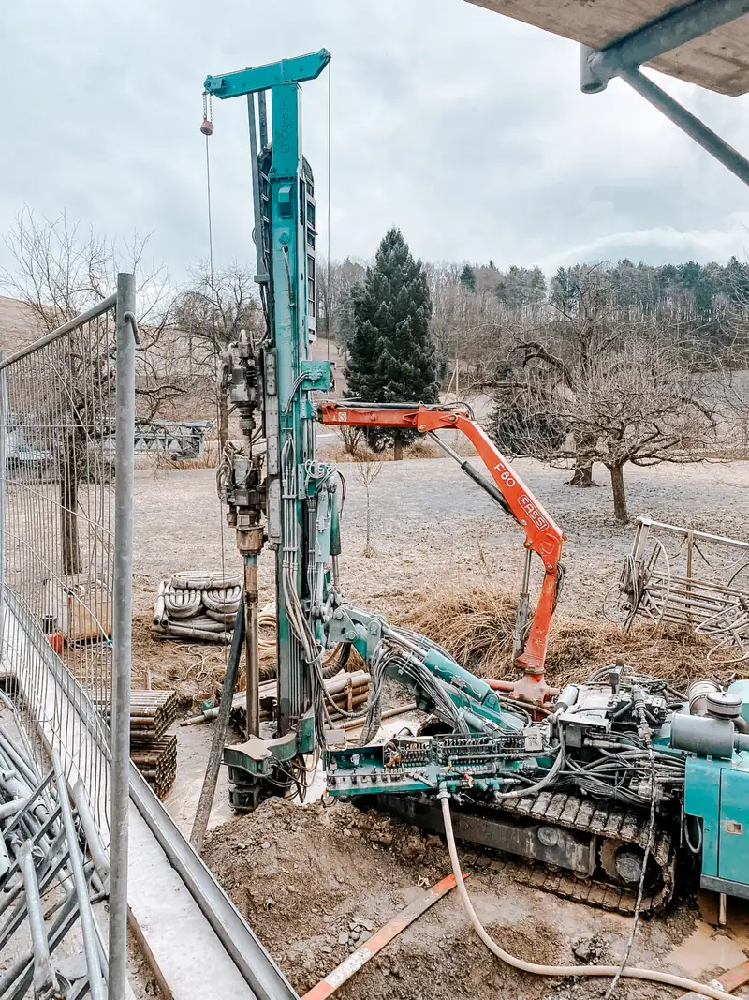

01
Abklärung
1 bis 3 ArbeitstageWas Sie tun
Sie schicken uns die fünf Angaben aus der E-Mail-Vorlage. Fotos vom Heizraum helfen.
Was wir tun
Wir prüfen im Wärmenutzungsatlas, ob gebohrt werden darf, und schätzen Anzahl und Tiefe der Sonden.
Von der ersten Anfrage bis zur Übergabe vergehen meist zwei bis drei Monate. Die meiste Zeit braucht die Bewilligung. Die Bohrung selbst dauert wenige Tage.

Sie schicken uns die fünf Angaben aus der E-Mail-Vorlage. Fotos vom Heizraum helfen.
Wir prüfen im Wärmenutzungsatlas, ob gebohrt werden darf, und schätzen Anzahl und Tiefe der Sonden.
Sie entscheiden und reichen mit der Offerte das Fördergesuch auf der Gesuchplattform des Kantons ein.
Wir erstellen die Offerte und liefern den Nachweis unseres Gütesiegels für das Fördergesuch.
Sie unterschreiben das Bewilligungsgesuch und reichen es bei der Gemeinde ein.
Wir stellen Situationsplan, Sondenlänge und Angaben zur Wärmepumpe für das Gesuch zusammen.
Sie sorgen für Strom und Wasser auf dem Grundstück und eine freie Zufahrt.
Wir informieren Ihre Nachbarn, bohren, bauen die Sonde ein und verfüllen das Bohrloch. Bohrschlamm fangen wir auf.
Sie stimmen den Anschlusstermin mit Ihrem Heizungsinstallateur ab.
Wir prüfen jede Sonde mit Druck, verlegen die Leitungen bis in den Heizraum und füllen das System.
Sie reichen Bohrprotokoll und Rechnung mit den Unterlagen der Wärmepumpe beim Kanton ein.
Wir übergeben Protokolle und Rechnung. Danach räumen wir die Baustelle.
Quelle: Kanton Zürich, Erdwärmesonden
Schicken Sie uns Adresse und heutige Heizung. Wir klären, ob gebohrt werden darf, und melden uns mit einer ersten Einschätzung zu Sonde, Ablauf und Förderbeitrag. Kostenlos.
Telefon Montag bis Freitag, 07.30 bis 12.00 und 13.30 bis 17.00 Uhr